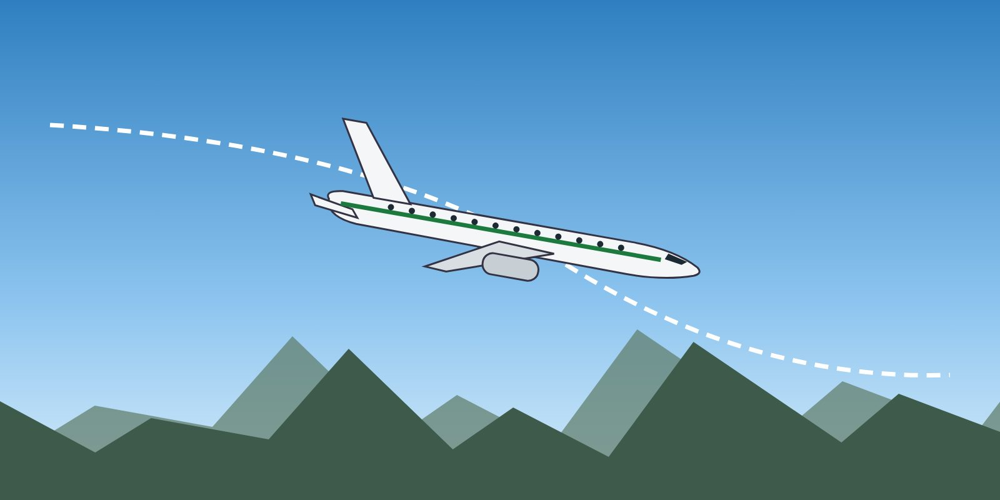

Lesson 10: Energy Management and Pitch-Power Coupling
Learning objectives
- Describe aircraft energy states and how pitch, thrust and drag change them.
- Explain the effect of underwing engines on pitch.
- Apply energy awareness to prevention and recovery.

Energy states
An aircraft's total energy is the sum of its potential energy (altitude) and kinetic energy (airspeed). Pitch exchanges one for the other. Only thrust and drag change the total. Common unsafe energy states:
- Low energy — low speed and low altitude, for example after a speed decay on approach. Few options remain.
- High energy — high speed in a descent, for example in a nose-low upset. The risk is overspeed and structural overload.
- Mismatch — high pitch with decaying speed (the energy is going into the climb), or low thrust with a level attitude.
Thrust response
- Jet engines take several seconds to accelerate from idle. Thrust is not an instant cure for a low-energy state — anticipate.
- At high altitude, excess thrust is small (Lesson 7).
- On the "back side" of the drag curve, below minimum drag speed, slowing down increases drag and the thrust needed. Speed can decay quickly if not corrected.
Pitch-power coupling
With engines mounted below the wing, the thrust line is below the centre of gravity. Increasing thrust produces a nose-up pitching moment; reducing thrust produces a nose-down moment. Expect it during a go-around, and in recoveries:
- In a nose-high, low-speed situation, high thrust can make it harder to lower the nose. Reducing thrust may be necessary to regain pitch control.
- In a stall recovery, adding thrust too early can work against the nose-down input.
- A go-around with full thrust from a low speed produces a strong pitch-up; follow the pitch target and trim as required.
Speedbrakes and configuration
Speedbrakes increase drag and, on many types, the stall speed. They are a tool for high-energy situations — such as a nose-low, high-speed upset — but should be retracted in a low-energy situation or stall recovery. Do not change the flap or gear configuration in a recovery unless the procedure requires it.
Key takeaways
- Total energy = altitude + speed. Pitch exchanges them; thrust and drag change the total.
- Jet thrust takes time to build — anticipate low-energy situations.
- Underwing engines: more thrust = nose-up moment; less thrust = nose-down.
- Speedbrakes for high energy only; retract them in a stall recovery.
Knowledge check
In a nose-high, low-speed situation on an aircraft with underwing engines, why may thrust need to be reduced?